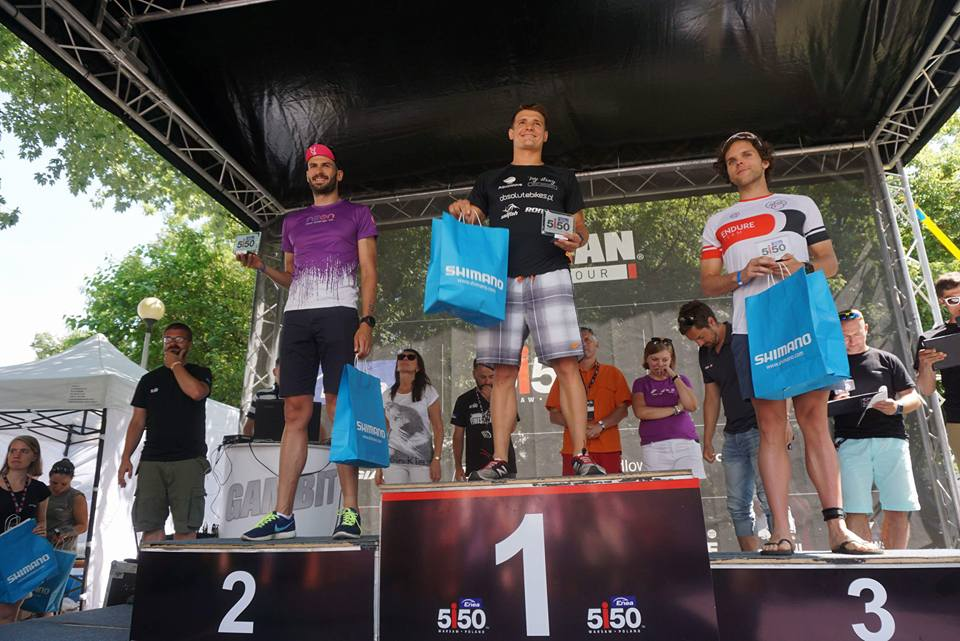

Sebastian Karaś: człowiek z żelaza
21.01.2020 | 15:37:30 | Karol Pierzyński
Sebastian Karaś przygodę z basenem rozpoczął w wieku 8 lat. Sukcesy przyszły niemal natychmiast. Najpierw reprezentował swoją szkołę na zawodach o różnych szczeblach, a później kraj na imprezach międzynarodowych. Ciężka praca w połączeniu z talentem przyniosły mu 50 medali Mistrzostw Polski we wszystkich kategoriach wiekowych i aż 5 rekordów Polski na basenie.
Kilka lat temu postanowił posmakować długodystansowych treningów na otwartym akwenie. Walka z siłami natury – a więc niską temperaturą wody, licznymi przeszkodami oraz falami – stała się jego pasją i zaowocowała kolejnymi niesamowitymi rekordami w karierze młodego sportowca.
Od tej chwili Sebastian stawiał sobie coraz trudniejsze cele do zrealizowania. Były to m.in.: rekordowy czas przepłynięcia najdłuższego jeziora w kraju (Jeziorak – 27 km / 5h 44 min), rekordy na odcinkach Hel-Gdynia (38 km w dwie strony) oraz w pływaniu ciągłym przez 12 i 24 godziny (54,2 km / 96,7 km). We wrześniu 2015 roku pokonał bez pianki Kanał La Manche (41 km), aktualizując rekord Polski do 8h 48 min.
Urodzony, by pływać
Sebastian Karaś przygodę z basenem rozpoczął w wieku 8 lat. Sukcesy przyszły niemal natychmiast. Najpierw reprezentował swoją szkołę na zawodach o różnych szczeblach, a później kraj na imprezach międzynarodowych. Ciężka praca w połączeniu z talentem przyniosły mu 50 medali Mistrzostw Polski we wszystkich kategoriach wiekowych i aż 5 rekordów Polski na basenie.
Kilka lat temu postanowił posmakować długodystansowych treningów na otwartym akwenie. Walka z siłami natury – a więc niską temperaturą wody, licznymi przeszkodami oraz falami – stała się jego pasją i zaowocowała kolejnymi niesamowitymi rekordami w karierze młodego sportowca.
Od tej chwili Sebastian stawiał sobie coraz trudniejsze cele do zrealizowania. Były to m.in.: rekordowy czas przepłynięcia najdłuższego jeziora w kraju (Jeziorak – 27 km / 5h 44 min), rekordy na odcinkach Hel-Gdynia (38 km w dwie strony) oraz w pływaniu ciągłym przez 12 i 24 godziny (54,2 km / 96,7 km). We wrześniu 2015 roku pokonał bez pianki Kanał La Manche (41 km), aktualizując rekord Polski do 8h 48 min.
Jak ryba w wodzie
W 2016 roku wielokrotny mistrz Polski postanowił pójść o krok dalej i przepłynąć wpław Bałtyk. Na realizację marzenia musiał czekać jednak rok, gdyż pierwsza z prób została przerwana. Pokonanie 100-kilometrowego odcinka łączącego Kołobrzeg z duńską wyspą Bornholm odbyło się w rewelacyjnym czasie 28 godzin i 30 minut, a Sebastian został pierwszą osobą w Polsce i na świecie, której udała się ta niezwykła sztuka. Przeszkód podczas wyzwania oczywiście nie brakowało. Wystarczy wspomnieć konieczność spędzenia kilkudziesięciu godzin z rzędu (również w nocy) w wodzie o temperaturze 16-18 stopni, odżywianie przy pomocy specjalnych kijów (samo dotknięcie łodzi traktowano jako dyskwalifikację), czy też fakt, że pianka pomagała utrzymać ciepłotę ciała wyłącznie w trakcie poruszania się. Polski pływak wykazał się niezwykłą siłą fizyczną i psychiczną: pokonał niewiarygodny dystans, fale, które momentami dochodziły do dwóch metrów, a także, a może przede wszystkim, siebie.
Popłyń, przejedź, dobiegnij
Niedawno grono pasji Sebastiana poszerzyło się o kolejną dyscyplinę: triathlon. Ekstremalne połączenie biegania, pływania oraz kolarstwa wymaga od uczestnika przemyślanego rozkładu sił oraz wysokiego poziomu mobilizacji, pozwalających osiągnąć możliwie najkorzystniejszy czas. To również ciężka praca nad całym ciałem: dobrzy pływacy charakteryzują się słabszymi stawami kolanowymi, z kolei biegacze przenoszą do wody nienaturalną sztywność górnych partii ciała. Dla Sebastiana, który kocha wyzwania, to idealna dyscyplina! Pływak ma już za sobą pierwsze starty i oczywiście pierwsze medale!
Mocno trzymamy kciuki za dalsze sukcesy i realizację kolejnych projektów!